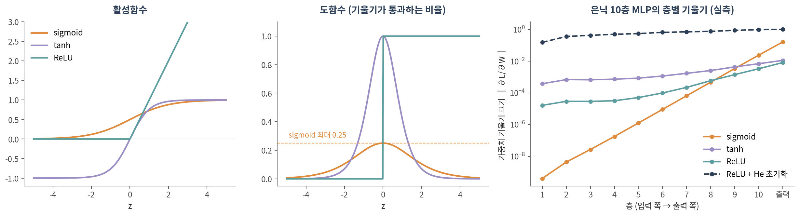
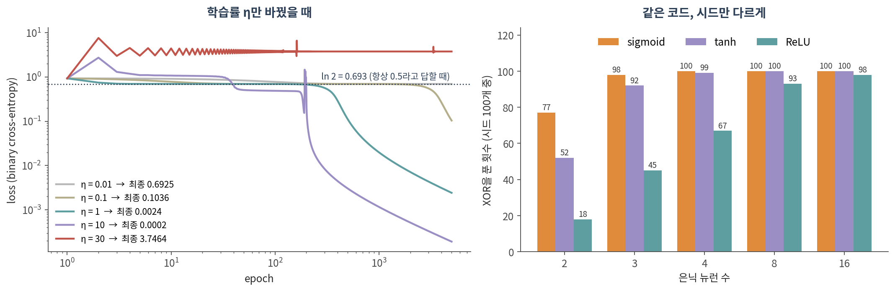
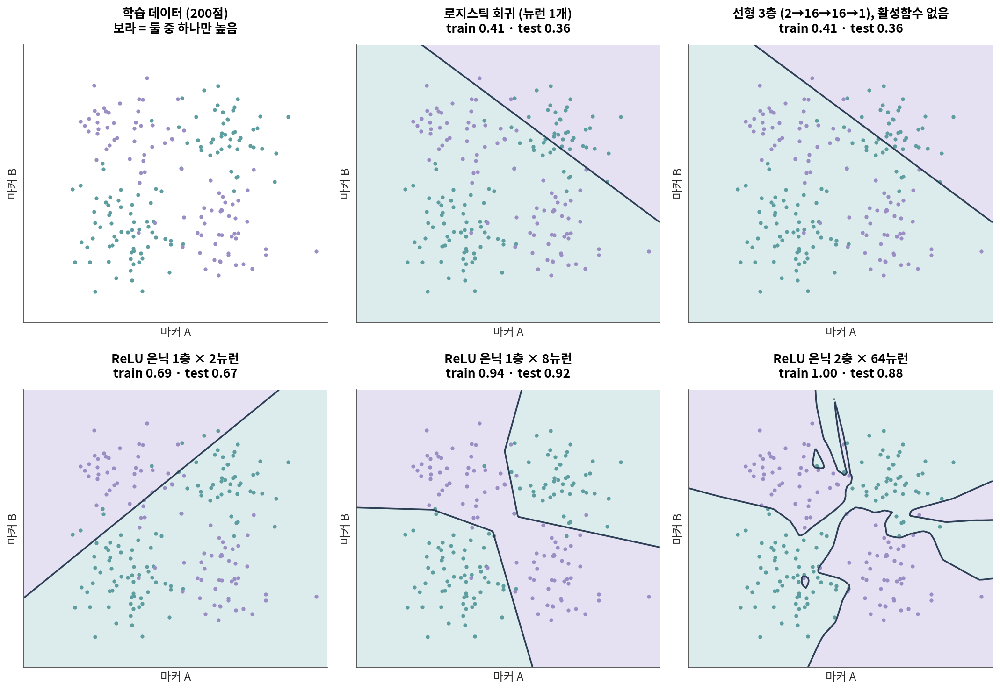

08. 회귀에서 신경망으로
이 챕터를 마치면 다음을 할 수 있습니다.
- 로지스틱 회귀가 이미 뉴런 하나라는 것을 식으로 보일 수 있다
- ⚠️ 활성함수 없이 층을 쌓으면 여전히 선형 모델이라는 것을 설명할 수 있다
- 과제에 맞는 출력층·손실 함수를 고르고, PyTorch에서 흔한 조합 실수를 피할 수 있다
- 역전파를 연쇄법칙으로 한 번 손으로 계산할 수 있다
- ⚠️ 학습률·초기화·시드가 결과를 바꾼다는 것을 실측 숫자로 말할 수 있다
- numpy로 2층 신경망을 직접 짜고, 같은 것을 PyTorch로 옮길 수 있다
🤔 생각해볼 질문
로지스틱 회귀는 써봤습니다. 신경망은 그걸 여러 층 쌓은 것뿐인가요? 그렇다면 무엇이 새로 생기나요?
1. 회귀에서 뉴런으로 🧮
1) 로지스틱 회귀는 이미 뉴런 하나다
- 로지스틱 회귀 — 입력의 가중합 z = w₁x₁ + w₂x₂ + … + b 를 만들고, sigmoid σ(z)로 0~1 사이 값으로 바꿈
- 뉴런(퍼셉트론) — 똑같이 가중합 → 비선형 함수. Rosenblatt(1958)의 퍼셉트론은 비선형 자리에 계단 함수를 썼을 뿐
- 마커 유전자 몇 개의 가중합으로 위험 점수를 만드는 모델은 정확히 이 뉴런 하나입니다
| 모델 | 식 | 출력 | 학습 |
|---|---|---|---|
| 선형 회귀 | z = w·x + b | 연속값 | 닫힌 해 또는 경사하강 |
| 로지스틱 회귀 | σ(w·x + b) | 0~1 | 경사하강 |
| 퍼셉트론 | step(w·x + b) | 0 또는 1 | 퍼셉트론 규칙 |
| 다층 신경망 (MLP) | σ(W₂ · f(W₁x + b₁) + b₂) | 과제에 따라 | 경사하강 + 역전파 |
- 새로 생긴 것은 가운데의 f — 층과 층 사이의 활성함수 하나입니다
2) ⚠️ 층을 쌓아도 선형이면 선형이다
활성함수 없이 선형층을 세 번 곱하면:
W₃(W₂(W₁x + b₁) + b₂) + b₃ = (W₃W₂W₁) x + (상수) = W′x + b′
- 행렬 곱은 결합법칙이 성립하므로 몇 층을 쌓아도 행렬 하나로 접힙니다
- 실측: 2→16→16→1 선형 3층(파라미터 337개)을 행렬 하나로 접어 1,000개 입력에 넣었을 때 출력 차이는 최대 1.2 × 10⁻⁷ — float32 반올림 수준입니다
- §4 그림의 첫 두 패널이 이것입니다. 로지스틱 회귀(파라미터 3개)와 선형 3층의 결정경계가 같은 직선이고 정확도도 같습니다
- ✅ 그러므로 신경망과 선형 모델의 유일한 차이는 층 사이의 비선형 활성함수입니다
🔗 06 §2의 재시작 랜덤워크(RWR)는 정규화한 인접 행렬을 선형으로 반복해서 곱하는 연산이었습니다. 12에서 그 사이에 학습되는 W와 활성함수를 끼우면 그래프 신경망이 됩니다.
3) XOR — 직선 하나로 가를 수 없는 문제
- (0, 0) → 0, (0, 1) → 1, (1, 0) → 1, (1, 1) → 0. 둘 중 하나만 켜졌을 때 1
- 평면에 찍으면 대각선끼리 같은 반이라 직선 하나로 가를 수 없습니다
- Minsky와 Papert(1969)가 단층 퍼셉트론은 XOR을 표현할 수 없음을 보였습니다
- 생물학식으로 바꾸면: 마커 A와 B 중 하나만 높을 때 나타나는 표현형
XOR 4점에서 직접 돌려본 결과:
| 모델 | 입력 | 정확도 |
|---|---|---|
| 로지스틱 회귀 | x₁, x₂ | 0.50 — 계수가 0이 되어 모든 점에 0.5 |
| 로지스틱 회귀 | x₁, x₂, x₁·x₂ | 1.00 (규제 약하게, C = 10⁶) |
| MLP (은닉 4개) | x₁, x₂ | 1.00 |
- 💡 회귀에서는 상호작용 항을 사람이 넣습니다. 신경망은 은닉층에서 그런 특징을 스스로 만듭니다
- ⚠️ 대신 공짜가 아닙니다. 그 특징을 배울 만큼의 데이터가 필요합니다 → 09의 주제
- ⚠️ 상호작용 항 모델도 기본 규제(C = 1)에서는 0.75에 그쳤습니다. 4점밖에 없어서 규제가 계수를 눌러버립니다
2. 활성함수와 손실 ⚡

1) 자주 쓰는 활성함수
| 함수 | 식 | 출력 범위 | 주로 쓰는 곳 | 주의 |
|---|---|---|---|---|
| ReLU | max(0, z) | [0, ∞) | 은닉층의 기본값 | 음수 입력에서 기울기 0 → 영영 안 움직이는 “죽은 뉴런” |
| sigmoid | 1 / (1 + e⁻ᶻ) | (0, 1) | 이진 분류의 출력 | 도함수 최대 0.25 → 층을 거칠수록 기울기가 줄어듦 |
| tanh | (eᶻ − e⁻ᶻ) / (eᶻ + e⁻ᶻ) | (−1, 1) | 순환 신경망 등 | 양 끝에서 포화 |
| softmax | eᶻᵏ / Σⱼ eᶻʲ | 합이 1 | 다중 분류의 출력 | 확률처럼 보이지만 보정된 확률이 아님 |
2) ⚠️ 기울기 소실 — 실측
- 역전파에서 기울기는 층마다 활성함수의 도함수가 곱해지며 거슬러 갑니다 (§3)
- sigmoid의 도함수는 아무리 커도 0.25 → 10층을 지나면 최선의 경우에도 0.25¹⁰ ≈ 9.5 × 10⁻⁷
- Glorot과 Bengio(2010)도 무작위 초기화한 깊은 망에는 sigmoid가 맞지 않는다고 보고했습니다 (상위 은닉층이 포화되기 쉬움)
위 그림 오른쪽의 실측값 (은닉 10층):
| 활성함수 · 초기화 | 1층 기울기 | 10층 기울기 | 1층 / 10층 |
|---|---|---|---|
| sigmoid · 기본 | 4.1 × 10⁻¹⁰ | 2.4 × 10⁻² | 1.7 × 10⁻⁸ |
| tanh · 기본 | 3.8 × 10⁻⁴ | 7.1 × 10⁻³ | 5.4 × 10⁻² |
| ReLU · 기본 | 1.7 × 10⁻⁵ | 3.4 × 10⁻³ | 4.9 × 10⁻³ |
| ReLU · He 초기화 | 1.6 × 10⁻¹ | 9.9 × 10⁻¹ | 0.16 |
- sigmoid 망의 첫 층은 사실상 학습되지 않습니다 — 기울기가 10층의 10⁻⁸ 배 수준
- ⚠️ ReLU로 바꾸는 것만으로는 부족했습니다.
nn.Linear의 기본 초기화는 U(−1/√n, 1/√n)(n = 입력 수)이고, ReLU용 He 초기화(He et al. 2015)는 분산이 그 6배입니다 - ✅ 활성함수와 초기화는 짝으로 고릅니다. ReLU 계열이면
nn.init.kaiming_normal_
3) 손실 함수
| 과제 | 예 | 출력층 | 손실 | PyTorch |
|---|---|---|---|---|
| 회귀 | 발현량 예측 | 선형 | 평균제곱오차(MSE) | nn.MSELoss |
| 이진 분류 | 종양 / 정상 | sigmoid | binary cross-entropy | nn.BCEWithLogitsLoss |
| 다중 분류 | 세포 유형 | softmax | cross-entropy | nn.CrossEntropyLoss |
- ⚠️ 분류에 MSE를 쓰지 마세요. 정답이 0인데 모델이 1이라고 확신할수록 MSE의 기울기는 오히려 0으로 갑니다 (σ′가 곱해지기 때문)
| 정답 0인데 틀리게 확신한 정도 | z에 대한 기울기 — MSE | cross-entropy |
|---|---|---|
| z = 4 (p = 0.982) | 0.035 | 0.982 (28배) |
| z = 8 (p = 0.9997) | 0.00067 | 0.9997 (약 1,490배) |
- → 가장 크게 틀린 샘플에서 가장 적게 배웁니다. cross-entropy의 기울기는 p − y 로 깔끔하게 떨어집니다
PyTorch 문서는 nn.CrossEntropyLoss의 입력을 정규화되지 않은 logit으로 규정하고, 내부에서 LogSoftmax + NLLLoss를 수행한다고 적고 있습니다. nn.BCEWithLogitsLoss도 이름 그대로 sigmoid를 안에 포함합니다.
그런데 모델 끝에 nn.Softmax()를 붙이면 softmax가 두 번 걸립니다. 에러는 나지 않습니다.
| logit [2.0, 0.5, −1.0], 정답 0번 | loss |
|---|---|
| 올바른 사용 | 0.2413 |
| softmax 두 번 | 0.7017 |
| softmax 두 번일 때 도달 가능한 최솟값 (3클래스) | 0.5514 |
→ 아무리 학습해도 loss가 0.55 밑으로 내려가지 않고, 학습은 “그럭저럭” 됩니다. 그래서 오래 발견되지 않습니다.
- ⚠️ softmax가 0.95를 냈다고 그 예측이 95% 맞는 것은 아닙니다. 현대 신경망은 보정(calibration)이 잘 되어 있지 않다는 보고가 있습니다 (Guo et al. 2017)
3. 경사하강법과 역전파 ⛰️

1) 경사하강법과 학습률
- 규칙은 하나 — w ← w − η · ∂L/∂w. 손실이 줄어드는 방향으로 조금 움직임
- η(학습률) 가 “조금”의 크기. 위 그림 왼쪽, 다른 조건은 전부 같습니다
| 학습률 η | 5,000 epoch 후 loss | 무슨 일이 있었나 |
|---|---|---|
| 0.01 | 0.6925 | ln 2까지만 내려오고 멈춤 — 아직 아무것도 못 배움 |
| 0.1 | 0.1036 | 2,700 epoch까지 ln 2 근처에 머물다 뒤늦게 풀기 시작 |
| 1 | 0.0024 | ✅ 순조롭게 수렴 |
| 10 | 0.0002 | 더 빠르지만 중간에 loss가 2.72까지 튐 |
| 30 | 3.7464 | ❌ 튀어 올라 시작(0.926)보다 나쁜 곳에 갇힘 |
- 💡 0.693 = ln 2 는 모든 샘플에 “0.5”라고 답하는 모델의 binary cross-entropy입니다. 이진 분류에서 loss가 이 근처에 머물면 아무것도 배우지 않은 것입니다
- 🔗 04 §2의 null model과 같은 역할 — 숫자를 해석하려면 “아무것도 모를 때의 값”부터 알아야 합니다
2) 역전파 = 연쇄법칙, 손으로 한 번
가장 작은 2층 망: x → z = w₁x → h = ReLU(z) → ŷ = w₂h → L = (ŷ − y)²
- 값 — x = 2, y = 1, w₁ = 0.5, w₂ = 3
- 순전파 (앞에서 뒤로) — z = 1, h = 1, ŷ = 3, L = 4
- 역전파 (뒤에서 앞으로) — 아래 표의 각 줄은 바로 윗줄에 국소 기울기 하나를 곱한 것
| 구하는 것 | 연쇄법칙 | 값 |
|---|---|---|
| ∂L/∂ŷ | 2(ŷ − y) | 2 × 2 = 4 |
| ∂L/∂w₂ | ∂L/∂ŷ · h | 4 × 1 = 4 |
| ∂L/∂h | ∂L/∂ŷ · w₂ | 4 × 3 = 12 |
| ∂L/∂z | ∂L/∂h · ReLU′(z) | 12 × 1 = 12 |
| ∂L/∂w₁ | ∂L/∂z · x | 12 × 2 = 24 |
- η = 0.01로 한 번 갱신하면 w₁ = 0.5 − 0.24 = 0.26, w₂ = 3 − 0.04 = 2.96 → 다시 순전파하면 L = 0.29 (4에서)
- 💡 앞 층의 기울기는 뒤 층 기울기에 곱으로 얹힙니다. 곱하는 값이 계속 1보다 작으면 소실(§2-2), 크면 폭발
- PyTorch의
loss.backward()는 이 표를 자동으로 채우는 것뿐입니다 — 실습 2에서 24와 4가 그대로 나오는지 확인합니다
3) ⚠️ 같은 코드, 다른 결과 — 시드와 초기화
은닉 뉴런 2개면 XOR을 표현할 수 있습니다. 그런데 경사하강이 그 가중치를 찾는지는 별개입니다 (위 그림 오른쪽).
- ⚠️ 은닉 2개일 때 시드 100개 중 성공: sigmoid 77, tanh 52, ReLU 18. 최소 구조에서는 시드가 결과를 정합니다
- 은닉 8개로 늘리면 100 / 100 / 93 — 이 실험에서는 뉴런을 넉넉히 줄수록 실패가 줄었습니다
- ⚠️ 이 작은 문제에서는 ReLU가 가장 나빴습니다. 은닉 2개 ReLU가 실패한 82번 중 55번은 네 입력 모두에서 출력이 0인 죽은 뉴런이 있었습니다 (성공한 18번에는 0번). “ReLU가 기본값”은 깊은 망의 기울기 소실 때문이지 모든 경우에 최선이라서가 아닙니다
- ⚠️ 모든 가중치를 같은 값으로 시작하면 은닉 뉴런들이 같은 기울기를 받아 끝까지 똑같이 움직입니다. 실측: 상수 0.5로 시작한 은닉 4개가 학습 후에도 네 행이 모두 [7.038, 7.038] → 뉴런 1개와 같아져 정확도 0.75. 0으로 시작하면 XOR에서는 기울기가 정확히 0이라 loss 0.6931에서 멈춥니다
- ✅ 시드를 고정하고 보고하세요. ✅ 여러 시드로 돌려 분포를 보세요. ❌ 잘 나온 시드 하나만 보고하지 마세요 — 🔗 01 §3의 “예뻐 보이는 임계값 고르기”와 같은 문제입니다
Colab에서 실행합니다. 설치는 90. Colab 환경 설정 참고.
import numpy as np
X = np.array([[0, 0], [0, 1], [1, 0], [1, 1]], dtype=float) # XOR
y = np.array([[0], [1], [1], [0]], dtype=float)
sigmoid = lambda z: 1 / (1 + np.exp(-z))
rng = np.random.default_rng(0)
H, lr = 4, 1.0 # 은닉 뉴런 수, 학습률
W1 = rng.normal(0, 1, (2, H)); b1 = np.zeros(H)
W2 = rng.normal(0, 1, (H, 1)); b2 = np.zeros(1)
def forward(W1):
h = sigmoid(X @ W1 + b1)
return h, sigmoid(h @ W2 + b2)
def bce(p):
return -np.mean(y * np.log(p) + (1 - y) * np.log(1 - p))
for epoch in range(5001):
h, p = forward(W1) # 1) 순전파
dz2 = (p - y) / len(X) # 2) 역전파: BCE+sigmoid → (p − y)
dW2, db2 = h.T @ dz2, dz2.sum(0)
dz1 = (dz2 @ W2.T) * h * (1 - h) # sigmoid′ = σ(1 − σ)
dW1, db1 = X.T @ dz1, dz1.sum(0)
W1 -= lr * dW1; b1 -= lr * db1 # 3) 경사하강
W2 -= lr * dW2; b2 -= lr * db2
if epoch % 1000 == 0:
print(f"epoch {epoch:5d} loss {bce(p):.4f}")
print("예측:", p.ravel().round(3))
# 역전파가 맞는지 확인 — W1[0, 0] 하나를 수치 미분과 비교
h, p = forward(W1)
dW1 = X.T @ ((p - y) / len(X) @ W2.T * h * (1 - h))
E = np.zeros_like(W1); E[0, 0] = 1e-5
numeric = (bce(forward(W1 + E)[1]) - bce(forward(W1 - E)[1])) / 2e-5
print(f"역전파 {dW1[0, 0]:.6e} 수치 미분 {numeric:.6e}")확인할 것:
- loss가 0.9258에서 시작해 0.0024까지 내려가고, 예측이 [0, 1, 1, 0]에 가까워지는가 (시드 0)
- 마지막 줄: 손으로 짠 역전파와 수치 미분이 소수점 여섯째 자리까지 같은가 — 역전파 코드를 짰으면 반드시 이렇게 확인합니다
H = 2로 바꾸고default_rng(0)의 시드를 0~9로 바꿔보세요. 몇 번 실패하나요?lr을 0.01, 30으로 바꿔 위 그림 왼쪽을 재현해보세요
4. 층을 쌓으면 무엇이 바뀌나 📊

1) 결정경계가 휜다
| 모델 | 파라미터 수 | train | test |
|---|---|---|---|
| 로지스틱 회귀 | 3 | 0.41 | 0.36 |
| 선형 3층, 활성함수 없음 | 337 | 0.41 | 0.36 |
| ReLU 은닉 1층 × 2 | 9 | 0.69 | 0.67 |
| ReLU 은닉 1층 × 8 | 33 | 0.94 | 0.92 |
| ReLU 은닉 2층 × 64 | 4,417 | 1.00 | 0.88 |
- 선형 두 모델은 결과까지 똑같습니다 — 파라미터가 100배 넘게 많아도 §1-2대로 직선 하나입니다. 둘 다 우연(0.5)보다 못합니다
- ReLU 하나 = 꺾이는 점 하나. 은닉 뉴런 수만큼 직선을 꺾어 이어 붙일 수 있습니다 (조각별 선형)
- 은닉 2개 모델은 표현력은 충분하지만, 이 시드에서는 뉴런 하나가 학습 200점 모두에서 0을 내는 죽은 뉴런이 되어 경계선이 하나뿐입니다 — §3-3의 실패가 여기서도 보입니다
- ⚠️ 가장 큰 모델이 train은 완벽하고 test는 더 나쁩니다. 오른쪽 아래 패널의 구불구불한 경계는 노이즈를 외운 흔적입니다 → 09
2) ⚠️ 표현할 수 있다 ≠ 찾을 수 있다 ≠ 일반화한다
보편 근사 정리 — 은닉층이 하나뿐이어도 뉴런이 충분하면 연속함수를 원하는 정확도로 근사할 수 있습니다 (Cybenko 1989; Hornik 1991)
흔히 “신경망은 뭐든 배운다”로 인용되지만, 정리가 말해주지 않는 것이 셋입니다
- 뉴런이 몇 개 필요한가
- 경사하강이 그 가중치를 찾는가 — XOR 은닉 2개 ReLU는 100번 중 18번만 성공
- 새 데이터에서도 맞는가 — 64 × 2층은 train 1.00, test 0.88 (8개짜리 0.92보다 나쁨)
오믹스 규모로 옮기면: 유전자 20,000개 → 은닉 256 → 2클래스 MLP의 파라미터는 5,120,770개입니다. 샘플은 보통 수십~수백 개입니다
💡 Part 1의 교훈이 그대로 옵니다. 모델의 자유도가 커질수록 null과 비교했는가, 선택을 보고했는가가 더 중요해집니다
Colab에서 실행합니다. torch는 Colab에 이미 설치되어 있습니다.
import torch, torch.nn as nn
# ── 1. §3-2의 손 계산을 autograd로 확인 (x = 2, y = 1) ────────────
w1 = torch.tensor(0.5, requires_grad=True)
w2 = torch.tensor(3.0, requires_grad=True)
L = (w2 * torch.relu(w1 * 2.0) - 1.0) ** 2
L.backward()
print(f"L = {L.item()}, dL/dw1 = {w1.grad.item()}, dL/dw2 = {w2.grad.item()}")
# ── 2. 실습 1의 XOR 네트워크를 torch로 ─────────────────────────────
X = torch.tensor([[0, 0], [0, 1], [1, 0], [1, 1]], dtype=torch.float32)
Y = torch.tensor([[0], [1], [1], [0]], dtype=torch.float32)
def train(model, epochs=5000, lr=1.0):
opt = torch.optim.SGD(model.parameters(), lr=lr)
loss_fn = nn.BCEWithLogitsLoss() # sigmoid가 안에 들어 있음
for epoch in range(epochs + 1):
opt.zero_grad() # ① 지난 기울기 지우기
loss = loss_fn(model(X), Y) # ② 순전파
loss.backward() # ③ 역전파 (실습 1의 dW1, dW2)
opt.step() # ④ 경사하강
return model, loss.item()
torch.manual_seed(0)
model, loss = train(nn.Sequential(nn.Linear(2, 4), nn.Sigmoid(), nn.Linear(4, 1)))
pred = torch.sigmoid(model(X)).detach().ravel().numpy()
print("loss", round(loss, 4), "예측", pred.round(3))
# ── 3. ⚠️ 모든 가중치를 같은 값으로 시작하면 ────────────────────────
same = nn.Sequential(nn.Linear(2, 4), nn.Sigmoid(), nn.Linear(4, 1))
for p in same.parameters():
nn.init.constant_(p, 0.5)
same, _ = train(same)
print(same[0].weight.detach().numpy().round(3)) # 행 하나 = 은닉 뉴런 하나
print("정확도", ((same(X) > 0).float() == Y).float().mean().item())
# ── 4. ⚠️ CrossEntropyLoss 앞에 softmax를 또 씌우면 ───────────────
ce, target = nn.CrossEntropyLoss(), torch.tensor([0])
logits = torch.tensor([[2.0, 0.5, -1.0]])
print("올바른 사용 ", round(ce(logits, target).item(), 4))
print("softmax 두 번", round(ce(torch.softmax(logits, 1), target).item(), 4))
print("그때의 바닥 ", round(ce(torch.tensor([[1.0, 0.0, 0.0]]), target).item(), 4))확인할 것:
- 첫 줄의 24와 4가 §3-2 손 계산표와 같은가
- numpy 버전의
dW1,dW2계산 여섯 줄이loss.backward()한 줄로 바뀌었다 — 그 대신 무엇을 계산하는지 보이지 않게 되었다 - 같은 값으로 시작한 은닉 뉴런 4개의 가중치가 네 행 모두 같은가
- 마지막 세 줄: 0.2413 / 0.7017 / 0.5514.
[[1.0, 0.0, 0.0]]은 softmax 출력이 가질 수 있는 최선이므로 그 밑으로는 못 내려갑니다
📝 요약
- 로지스틱 회귀는 이미 뉴런 하나(가중합 → sigmoid)이고, 신경망은 그 사이에 은닉층을 넣은 것입니다
- ⚠️ 활성함수 없이 쌓은 선형층은 행렬 하나로 접힙니다 (선형 3층 = 로지스틱 회귀, 정확도까지 동일). 차이는 비선형 활성함수 하나입니다
- XOR처럼 상호작용이 있는 패턴을 회귀는 사람이 넣은 x₁·x₂ 항으로, 신경망은 은닉층에서 스스로 만든 특징으로 풉니다
- ⚠️ sigmoid는 깊은 망에서 기울기를 없앱니다 (10층에서 1층/10층 기울기 비 1.7 × 10⁻⁸). ReLU도 초기화와 짝이어야 합니다 (He 초기화 0.16)
- 분류에는 cross-entropy. MSE는 크게 틀린 샘플에서 오히려 덜 배웁니다 (z = 4에서 1/28)
- ⚠️
nn.CrossEntropyLoss·nn.BCEWithLogitsLoss는 logit을 받습니다. softmax를 또 씌우면 에러 없이 loss 바닥이 생깁니다 - 역전파는 연쇄법칙을 출력 쪽부터 곱해 내려가는 것이고,
loss.backward()는 그 표를 자동으로 채웁니다 - ⚠️ 학습률·시드·초기화가 결과를 바꿉니다 (XOR 은닉 2개 ReLU: 성공 18/100). 시드를 고정하고 여러 번 돌려 보고하세요
- binary cross-entropy 0.693(= ln 2)은 “아무것도 배우지 않음”의 기준선입니다
- 표현할 수 있다 ≠ 경사하강이 찾는다 ≠ 새 데이터에 맞는다 — 세 번째가 09의 주제입니다
➕ 더 읽을거리
고전
Rosenblatt F. The perceptron: a probabilistic model for information storage and organization in the brain. Psychol Rev. 1958.
Minsky M, Papert S. Perceptrons: An Introduction to Computational Geometry. MIT Press; 1969.
Rumelhart DE, Hinton GE, Williams RJ. Learning representations by back-propagating errors. Nature. 1986.
Cybenko G. Approximation by superpositions of a sigmoidal function. Math Control Signals Syst. 1989.
Hornik K. Approximation capabilities of multilayer feedforward networks. Neural Netw. 1991.
학습이 잘 안 되는 이유와 대책
Glorot X, Bengio Y. Understanding the difficulty of training deep feedforward neural networks. AISTATS. 2010.
He K, Zhang X, Ren S, Sun J. Delving deep into rectifiers. ICCV. 2015. (He 초기화)
Guo C, Pleiss G, Sun Y, Weinberger KQ. On calibration of modern neural networks. ICML. 2017.
교과서
Goodfellow I, Bengio Y, Courville A. Deep Learning. MIT Press; 2016. (6장이 이 챕터 범위)
생물학에서의 딥러닝
Ching T, et al. Opportunities and obstacles for deep learning in biology and medicine. J R Soc Interface. 2018.
Eraslan G, Avsec Ž, Gagneur J, Theis FJ. Deep learning: new computational modelling techniques for genomics. Nat Rev Genet. 2019.
도구 문서
PyTorch — nn.CrossEntropyLoss · nn.Linear · nn.init